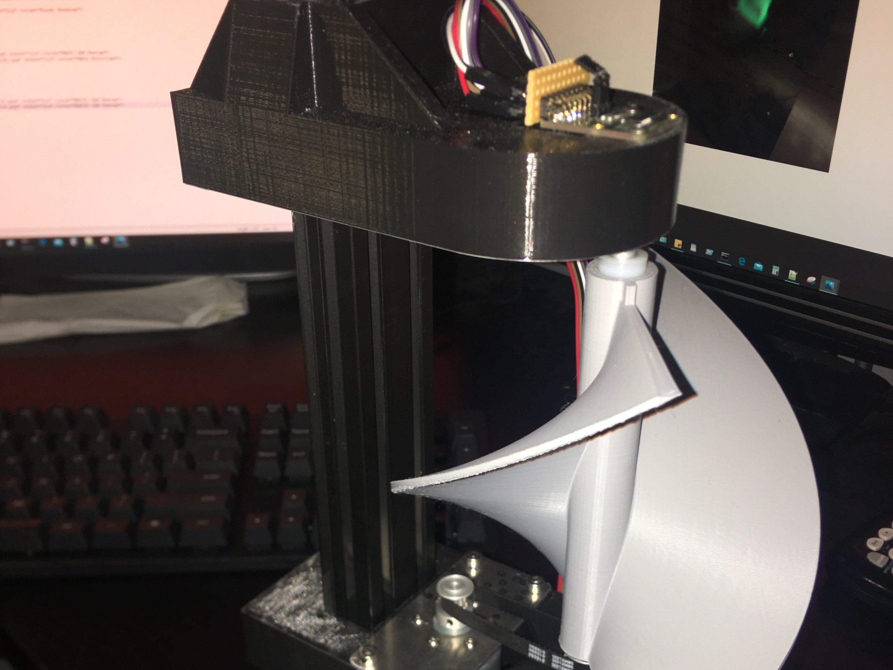

1 / 10

MkI helicoid mounted on small DC motor
2 / 10

Projected rectangular tube on MkI helicoid
3 / 10
PWM speed testing
4 / 10

MkII display software simulation
5 / 10
MKII display with integrated drive and laser
6 / 10

MkII helicoid spinning
7 / 10
MkIII stationary dot with offset timing
8 / 10

MkIII with high-res digital encoder
9 / 10
MKIII laser matrix design v3
10 / 10

MkIII still image from rotating wheel animation
Volumetric Display - Spinning Helicoid
This project showcases the culmination of over a year and a half worth of time and effort put into researching, designing, manufacturing, and iterating resulting in a successful volumetric display prototype. What started out as a research writing assignment, turned into one of the most complex projects I have tackled. Now I am looking for ways to improve my prototype in a practical manner, but I will talk about that later. At this point, you are probably wondering, what is a volumetric display? Well, it is a complicated topic which is outside the scope of this portfolio, so I will only briefly get into it.What are volumetric displays?
The biggest misconception people have about volumetric displays is the idea that they are the same as holograms. Some people might be familiar with the Tupac hologram which is what a normal hologram might look like. Holograms work by decieving the viewer and making them think that a 3-dimensional object is physically in front of them. On the other hand, volumetric displays can produce a 3-dimensional object using light. You can think of it like an optical 3D printer, where instead of an object being printed in some plastic material, the object is instantly projected onto a varying 3-dimensional surface using visible light. This results in a technology capable of displaying 3-dimensional objects over a true 3-dimensional space, and not just on a 2-dimensional screen. I also like to reference the 3D displays from the Iron Man movies, partly because I'm obsessed with Iron Man (My CNC'd Iron Man Keychain), and also because his 3-dimensional displays are amazing, even though they aren't real yet.Starting from Scratch
I got the idea of volumetric displays when doing a research assignment for a research writing class. We were tasked with researching different technologies in our respective fields. With my background being in Electrical Engineering, I began searching and reading many different articles on new technologies in my field. The first one that really caught my attention was an article on a type of volumetric display technology. This display technology works on the principle of an acoustic trap. The researchers used high frequency sound waves to levitate a very lightweight particle in the air, then moved it around quick enough for persistence-of-vision to occurr when projecting light onto the particle. Pretty cool, right? This got me started down the rabbit hole that is designing and creating a volumetric display. The volumetric display space is very limited when it comes to acessing information online, which is mostly due to the fact that these devices have rarely been attempted. I did happen to come across an article where a group created a 'pseudo' volumetric display using a swept helicoid approach. I call this a 'pseudo' display because it doesn't have the ability to display different objects easily. In their design, you have to program a new disk for whatever object you want to display. This made me work towards the possibility of having a display that could theoretically display any object. So I set off to do just that with the knowledge I gained from the spinning helicoid method displayed by the 'pseduo' display.Mk I Spinning Helicoid
The goal of this first version was to get a feel for how far a projector based light source would take the display. It was also going to satisfy a portion of my research assignment, so given the short time frame, I wasn't planning on getting everything right the first time around. As with any project, I learned exactly how complex a system has to be to be able to display dynamic content in a 3-dimensional method like this one. I designed and 3D printed a helicoid shape and attached it to a small DC motor. With no speed control, I just used a DC power supply to get the helicoid spinning at a high speed. Then, I had to figure out what to use for a light source, which I ended up using a very inexpensive projector. This allowed me to very easily display different shapes on the rotating helicoid surface. This first video is a rectangular tube that extends down the length of length of the helicoid, with a hollow core. And so the rabbit hole gets much deeper.After experimenting with the projector, I found out that to make a dynamic object on the rotating helicoid, I would need a projector capable of atleast 2,000 frames per second. For reference, the projector I was using was capable of only 60 frames per second, which is very typical in the projector realm. After a lot of research, I found that Texas Instruments actually produces chipsets for advanced projector technology, enabling high quality projectors to reach up to 8,000 frames per second depending on the model. The only issue is that these projectors are very expensive. This led me to what is probably the most original part of my design, which is the use of laser diodes to create my own very low resolution projector, which could achieve a relatively high frame rate. After deciding to move forward with laser diodes, I sourced a little over 64 inexpensive red laser diodes from Amazon. Before I could begin creating a laser diode matrix, I had to think about the implementation of everything. The first step in that implementation was to experiment with open vs. closed loop position and speed control. At this point, I tried to get some speed feedback utilizing a magnetic tape head and a small magnet on the helicoid. Including an arduino and some filter/amplifier circuits in the mix allowed me to get a rough measurement on the speed at which the motor rotated the helicoid. Since I only had one magnet on the helicoid at the time, I couldn't get very accurate measurements of speed, so I changed gears to an optical enocder method. I 3D printed an attachment to the helicoid, which you can actually see working in the video below. Here, I have one laser diode feeding through the optical encoder, and another to try to mimic a stable dot of laser light. Unfortunately, this setup had very poor results where the laser dot was constantly moving down the helicoid, so I set out for the next iteration to address a lot of the issues I was seeing mechanically and with regards to controls.
Mk II Spinning Helicoid
This next iteration was focused soley on maintaining a stable and static laser dot. If the dot being reflected back from the helicoid surface wasn't vertically moving, that meant my PID control loop was properly tuned, and the mechanical properties of the system were up to the task keeping the helicoid speed constant. To accomplish this, that meant a new and more powerful DC motor, a central shaft with bearings for a friction-free helicoid, and a real optical encoder built into the motor. This encoder was specified to be an 8192cpr encoder from Pololu, which meant a decently high accuracy position feedback for the PID loop. However, the one thing in this design I overlooked was rigidity. I ended up 3D printing some gears to save on cost of materials for transferring the motion of the motor to the helicoid. This made for a very noisy mechanical assembly with a lot of room for improvement. Nevertheless, I was able to improve greatly upon Mk I when it comes to the stability of the helicoid speed and laser dot position. The laser dot on the helicoid surface was created by turning the laser above the helicoid on at the exact same position of the helicoid for every rotation. I then turn off the laser very quickly so that the height of the laser dot is small. Increasing the pulse width would in turn increase the height of the laser dot seen at the surface of the helicoid. In the software I built to test this process, I had to manually set an offset time to the laser on time since I didn't have an absolute position encoder on the motor.I learned a lot from this second version of the display. One thing that was apprent to me was that controlling the helicoid speed accurately so that the laser diode relies on timing was a very inaccurate method of projection. Rather, the right way to go about this would be to disregard the motor control, and focus on a very precise position feedback mechanism. This drew me to purchase a magnetic based absolute rotary encoder capable of a 12-bit absolute position feedback. This communicates with the arduino via SPI protocol capable of a 10kHz signal. Now, I can trigger the laser firing based on the current position feedback and remove the need for any timing based system, which is what Mk III tries to accomplish.
Mk III Spinning Helicoid
The only way I was going to reach a functioning display was to make this next version sturdy. To help with that, I reused some aluminum extrusion from a previous project as well as some well designed 3D prints to house the printed helicoid and motor assembly. This also meant I could remove the gearing from Mk II and use a much quieter timing belt with the appropriate pulleys and belt tensioning slots. This proved to be miles better than Mk II in regards to structural integrity and vibrations dampening. Next on the list of things to do was to create an actual projection source for the display. In Mk I & II, those assemblies were tested soley with a single laser diode included. Now that I had the fundamentals down, it was time to scale up the display size to a 4 x 8 laser diode matrix. This was maybe the hardest part to create, given that the laser diodes were of low quality (so that they were inexpensive), their beam profile was not completely perpendicular to the front surface of the diode housing. This fact meant that I could not just print a housing with holes in a grid pattern and insert the lasers into their corresponding positions. Instead, I had to design a board to drive the laser matrix while having the ability to reposition each individual diode to make their beams all parallel to eachother.The video above shows the finished laser matrix board, fitted with an arduino nano every, four high power shift registers, and some discrete components for power delivery. The laser diodes were each focused onto a wall at a distance so the spot size was uniform, and then they were wired and heatshrunk so the focal length wouldn't shift. Lastly, solid core copper wire was used to solder them in place, so that I could bend the wires of each diode to the correct position. I made a calibration sheet so that I had something to point each diode at when tuning the matrix. While this process was extremely tedious, it really paid off, and was the much less expensive option to a high speed DLP based projector.
Now for the best part, putting everything together! I managed to redo the software so that calculating the voxels (3D pixels) that need to be on at each helicoid angle takes under a minute to calculate. This is far better than the first version that took half an hour. After simulating and transferring the animation data to the arduino, I managed to get a dynamic object simulation of a rotating wheel on the spinning helicoid volumetric display. While this "wheel" may not have a thickness to it, thats purely because capturing video of the thicker wheel animation proved difficult. However, I'm very pleased with how everything turned out, and will continue to add content from the display on here as I learn what objects look best in a 4x8x64 voxel setup. Theoretically, with the right software, I could purchase a high speed projector and could achieve very cool looking displays, similar to what Voxon Photonics has done commercially.